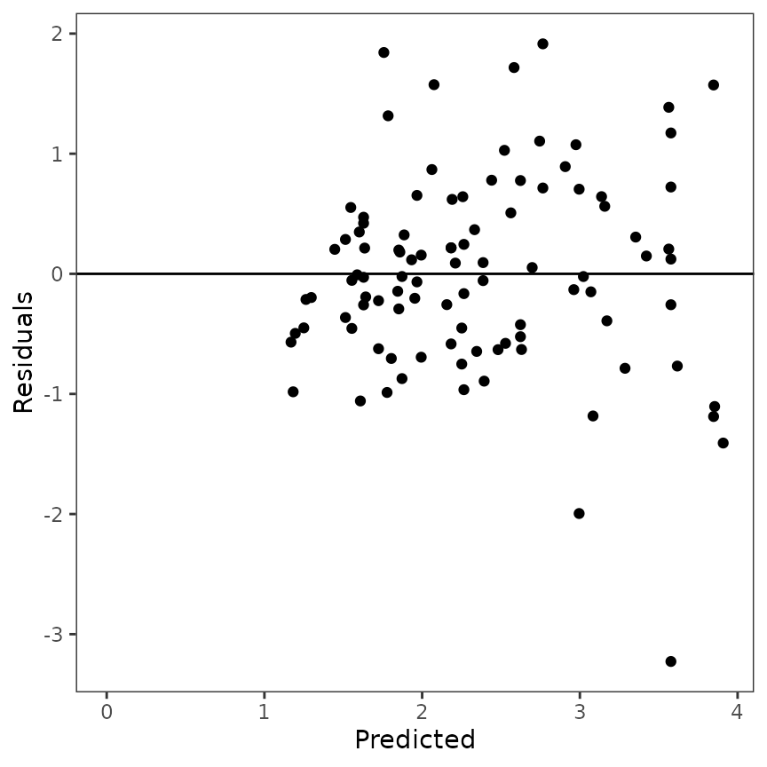
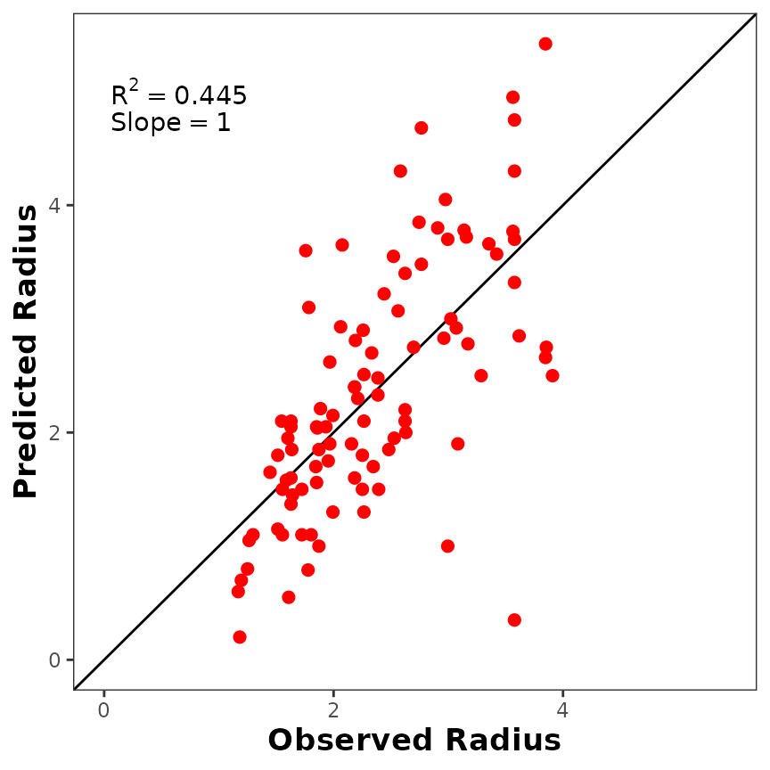
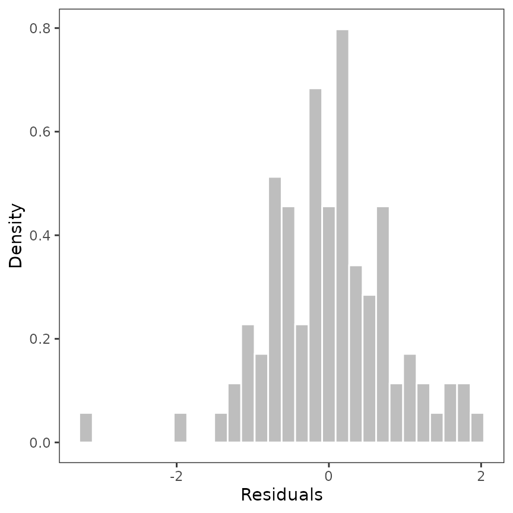
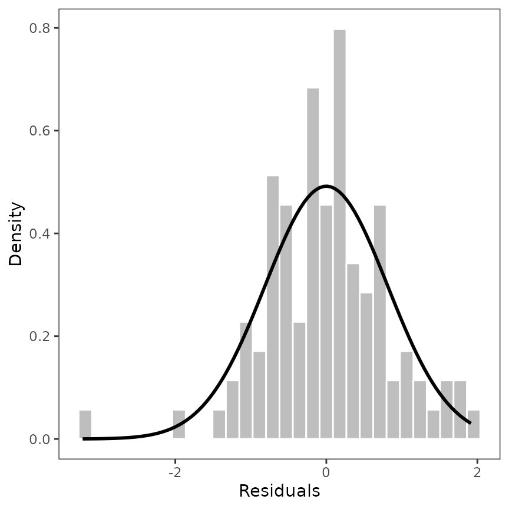
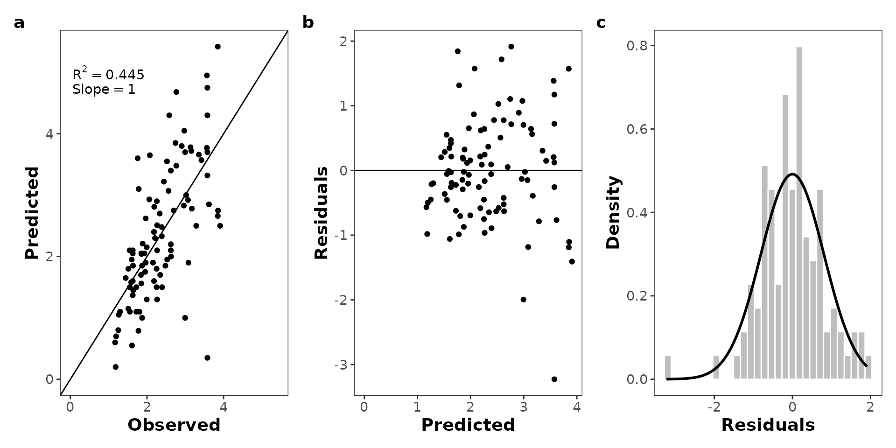

library(likelihood)
library(likelihoodTools)Introduction
This vignette will show you how to get started with the
likelihoodTools package. The likelihoodTools
package provides a set of tools to help you work with the
likelihood package (Murphy
2023).
We use the dataset and the example included in the
likelihood to illustrate how to use the
likelihoodTools package.
We will show you how to create a model function, compute the MLE of
the parameters (both steps from likelihood package), and
then how to use the likelihoodTools package to:
- extract the main information from the MLE results
- plot residuals vs. predicted values
- plot the residuals vs. the observed values.
Maximum Likelihood Estimation of the models parameters
As indicated in the likelihood package the first step is
to formulate the model function, and then compute the MLE of the
parameters.
data(crown_rad)
dataset <- crown_rad
modelfun <- function(a, b, DBH) {
a + b * DBH
}Then, compute them MLE of the parameters using the
anneal function from the likelihood
package.
results <- anneal(
model = modelfun,
par = list(a = 0, b = 0),
var = list(
DBH = "DBH", x = "Radius", mean = "predicted",
sd = 0.815585, log = TRUE
),
source_data = dataset,
par_lo = list(a = 0, b = 0),
par_hi = list(a = 50, b = 50),
pdf = dnorm,
dep_var = "Radius",
max_iter = 20000,
show_display = FALSE
)Extract the main information from the MLE results
The likellihood::anneal() function returns a list object
with information on the annealing run. This list-type object contains
several information (see likellihood::anneal() for more
details). The mle_format() function from
likelihoodTools package allows extract the main information
from the MLE results in a more user-friendly way.
mle_format(results, yvar = "Radius")
#> max_likeli n_params aic_cor aic R2 slope rmse
#> 1 -119.7453 2 243.6156 243.4906 0.4450001 0.9999627 0.8151813You can plot the table with more style using
thekableExtra (Zhu 2024)
package.
m <- mle_format(results, yvar = "Radius")
# Rename the columns
colnames(m) <- c(
"Maximum Likelihood",
"# Params.",
"AIC~cor~",
"AIC",
"R^2^",
"Slope",
"RMSE"
)
# Print the results in a table
library(kableExtra)
kable(m, escape = FALSE, caption = "MLE Results", digits = 3) |>
kable_styling(full_width = F, position = "center", bootstrap_options = c("striped", "hover"))| Maximum Likelihood | # Params. | AICcor | AIC | R2 | Slope | RMSE |
|---|---|---|---|---|---|---|
| -119.745 | 2 | 243.616 | 243.491 | 0.445 | 1 | 0.815 |
Plot the residuals vs. predicted values
The mle_plot_residuals() function allows you to plot the
residuals (observed - residuals) values vs. predicted values.
The predicted values are obtained from the model with the parameters
values estimated by maximum likelihood estimation using simulated
annealing.
p_residuals <- mle_plot_residuals(results, yvar = "Radius")
Plot the predicted vs. observed values
The mle_plot_observed() function allows you to plot the
predicted values vs. observed values. The predicted values are
obtained from the model with the parameters values estimated by maximum
likelihood estimation using simulated annealing.
p_observed <- mle_plot_observed(results, yvar = "Radius")Customize the plot
If you don’t like the default plot, you can customize it using
ggplot2 (Wickham 2016)
parameters. For example, you can increase the size of the points, change
the color, change axis titles, etc.
p_observed +
ggplot2::geom_point(size = 2, color = "red") +
ggplot2::labs(x = "Observed Radius", y = "Predicted Radius") +
ggplot2::theme(
axis.title.x = ggplot2::element_text(size = 13, face = "bold"),
axis.title.y = ggplot2::element_text(size = 13, face = "bold")
)
Plot the distribution of the residuals
Maybe the user could be interested in plot the distribution of the residuals. We provided a code to do this (we will implement it as function).
library(ggplot2)
library(dplyr)
# compute the residuals
d <- results$source_data |>
dplyr::mutate(residuals = Radius - predicted)
# plot the histogram
p_residuals_dist <- ggplot(data = d, aes(x = residuals)) +
geom_histogram(aes(y = after_stat(density), x = residuals),
fill = "gray", col = "white", bins = 30
) +
theme_bw() +
theme(panel.grid = element_blank()) +
xlab("Residuals") +
ylab("Density")
p_residuals_dist
Now, we can add the distribution to the histogram. For those, we used
the MASS package (Venables and
Ripley 2002).
library(MASS)
# estimate the distribution of the residuals
dist <- MASS::fitdistr(d$residuals, "normal")
params <- as.data.frame(t(dist$estimate))
p_residuals_dist <- p_residuals_dist + stat_function(
fun = dnorm,
args = list(
mean = params$mean,
sd = params$sd
),
color = "black", linewidth = 1
)
p_residuals_dist
More customization
Maybe the user is interested in arrange the residuals plots, the
observed vs. predicted and the error distribution plots in a single
plot. There are several packages as patchwork (Pedersen 2024) or cowplot (Wilke 2024) that allow you to do this. Here, we
provide a simple code to do this.
library(patchwork)
(p_observed + p_residuals + p_residuals_dist +
plot_annotation(tag_levels = "a")) &
theme(
axis.title = element_text(size = 14, face = "bold"),
axis.text = element_text(size = 11),
plot.tag = element_text(size = 14, face = "bold")
)